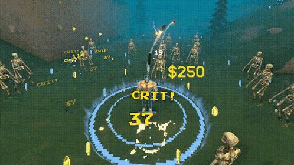

안녕하세요. 지원자 원유찬입니다.
Junior Game Programmer
About Me
어떤 개발자가 되고 싶은가?
게임을 좋아하게 된 계기?
개발자로서의 비전과 포부.
Skills
- C++
- Socket Programming
- Database
- MCP Server
- Unreal Engine
- Unity
Projects
| 프로젝트명 | Megabonky | ||
|---|---|---|---|
| 이미지(GIF) |
 |
||
| 프로젝트 개요 |
서버-클라이언트 구조에 대한 깊은 이해를 목표로 진행한 1인 개발 프로젝트입니다. 온라인 멀티플레이 환경에서 데이터 동기화를 최우선 과제로 삼아 개발했습니다. |
||
| 작업 인원 | 1인 개발 | 기간 | 2025.12 ~ 2026.02 |
| 주요 기능 |
• GAS를 활용한 캐릭터 능력, 무기 시스템 • 웹서버와 게임서버간 JSON을 활용한 통신 • DB를 통한 데이터 관리 |
||
| YouTube | 프로젝트 영상 보기 | ||
Technical Implementation
서버 아키텍처 및 통신 최적화
서버 아키텍처 설계 과정에서 AI 도구를 활용해 구조를 검토하고 통신 프로토콜을 개선했습니다.
- 역할 기반 멀티 서버 구조:
언리얼 클라이언트, 실시간 게임 서버, 웹 서버, 데이터베이스가 명확히 분리되어 각각 독립적으로 부하를 처리하며 시스템의 안정성을 보장합니다. - 목적별 통신 프로토콜 분리:
로그인 및 계정 처리는 RESTful 기반의 HTTP(S) 비동기 통신을, 실시간 게임 플레이는 UDP 기반의 엔진 내장 네트워크(RPC, Replication)를 사용하여 최적화했습니다. - 중앙 집중식 데이터베이스 정책:
보안과 성능을 위해 웹 서버만 DB에 직접 접근하며, 게임 서버는 웹 서버를 통해 필요한 플레이어 데이터를 비동기적으로 로드 및 저장합니다. - FlatBuffers 패킷 최적화:
Winsock 기반 TCP 통신 시 FlatBuffers 바이너리 직렬화를 적용하여 JSON 대비 패킷 크기를 줄이고 통신 처리 효율을 극대화했습니다. - 결함 방지 및 비동기 처리:
모든 서버 간 통신은 비동기 방식으로 설계하여 프레임 지연을 최소화하고, 프로세스 분리를 통해 유지보수성과 확장성을 확보했습니다.
서버 통신 구조도 (Architecture)

게임 어빌리티 시스템 (GAS) 및 매커니즘 고도화
- 기능적 관심사 분리에 기반한 Attribute Set 설계:
캐릭터, 무기(액터), 몬스터의 능력치 요구 사항을 분석하여 각각 독립적인Attribute Set아키텍처를 구축, 데이터의 무결성과 확장성을 확보했습니다. - 복합 데미지 산출을 위한 Execution Calculation 파이프라인:
단순 수치 합산을 넘어ExecutionCalculation클래스를 활용하여 캐릭터의 스탯과 무기의 고유 속성이 결합된 정교한 데미지 공식을 구현했습니다. - Authoritative Server 기반의 어빌리티 생명주기 관리:
클라이언트 변조 방지를 위해 모든 어빌리티의 활성화(Activate) 및 효과 적용을 서버 단의PlayerController타이머 시스템으로 원격 제어하여 동기화 신뢰성을 극대화했습니다. - GameplayEffect를 활용한 동적 속성 조작:
무기 강화 및 캐릭터 성장 시스템에GameplayEffect를 전면 적용하여, 런타임 중 실시간으로 Attribute 값을 정밀하게 조정하는 모듈형 강화 시스템을 구현했습니다.
데이터 기반 밸런싱 및 시스템 확장성
- Data-Driven 설계 및 유지보수성 확보:
하드코딩을 배제하고DataTable과CurveTable을 활용하여 무기 속성, 강화 수치, 몬스터 스텟 등 게임의 핵심 밸런스 데이터를 데이터 중심으로 관리합니다. - 데이터 테이블 기반 랜덤 아이템 시스템:
아이템 리스트를DataTable로 분리 관리하여 시스템의 독립성을 높였으며, 정의된 데이터 셋 내에서 무기를 랜덤 추첨(Random Draw)하고 관련 스텟을 즉각적으로 바인딩하는 로직을 구축했습니다.
수학적 모델링을 활용한 절차적 난이도 조절
- 비선형 스폰 알고리즘 및 Stress 조절:
로그(Log) 함수 모델링을 통해 게임 진행 시간에 따른 몬스터 스폰 마릿수를 절차적으로 조절, 플레이어의 누적 스트레스와 긴장감을 수학적으로 밸런싱했습니다.
int SpawnNum = Multiplier * FMath::Loge(1 + (Time * Time) / 600) + 3; - 트리거 기반 동적 이벤트 시스템:
시간 경과 및 특정 조건 달성에 따라 보스 소환, 웨이브 급증, 엘리트 몬스터 출현 등GameMode수준에서의 동적 이벤트를 발생시켜 게임 세션의 몰입도를 높였습니다.
Contact
Email: wonyu1997@naver.com
Phone: 010-6429-8488
GitHub: github.com/Veduy